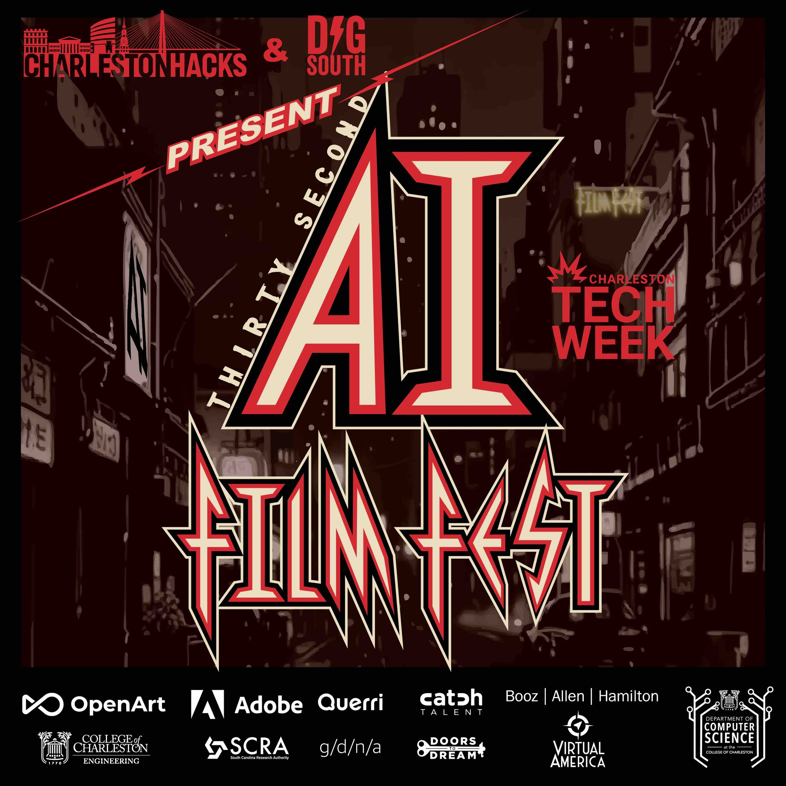

Audience Favorite · What?
Max Krause & Mike Astle

Event archive
30-Second Impact
May 1, 2025 · 6–9 PM · Simmons Center, College of Charleston, Room 180
CharlestonHacks hosted a three-hour AI video hackathon as part of Dig South and Charleston Tech Week. Solo filmmakers and teams of up to five created a cohesive, PG-level 30-second film using at least one AI tool, then presented it to an audience and judges.
Special thanks to AI film sponsor OpenArt.
Max Krause & Mike Astle
John Doyle
Imran Mujawar